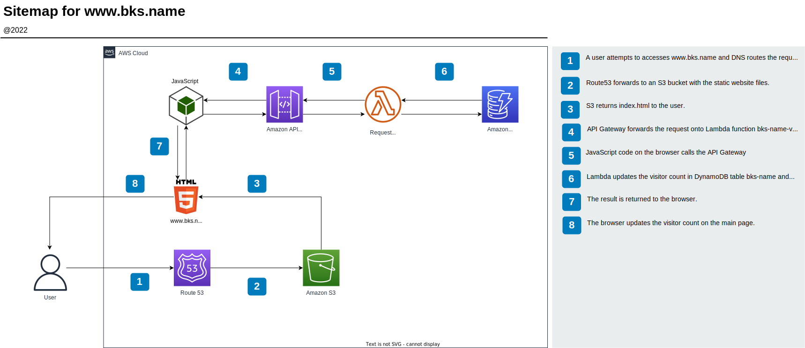

www.bks.name
Description
This website is the project.
I took inspiration from The Cloud Resume Challenge - AWS while creating this website, but I didn't follow its requirements rigidly. For example, I did not create in an HTML format of my resume, because I felt that the time would be better spent focusing on other skills like Terraform, Python, and Kubernetes.
This is a serverless website hosted on AWS in an S3 bucket. When a user connects, JavaScript connects to an AWS API Gateway, which forwards the request onto an AWS Lambda function, which updates the count in the DynamoDB database. The updated count value is then returned to the browser.
Technologies Used
- AWS Serverless
- AWS API Gateway
- AWS Lambda
- AWS DynamoDB
- AWS CodePipeline (CI/CD)
- JavaScript
- CSS
- HTML
- Git/GitHub
Results
I now have a handy way to gather and present information on the personal development projects that I work on. Although, all of my work is still kept in repositories.
1-Click Deployment
A 1-click deployment is not applicable for this project.
Diagram

Video
A video is not applicable for this project.
Images
Images are not applicable for this project.
Code
The source code is available here.
Write-up
I will keep this short. I learned a lot about HTML/CSS/JavaScript creating this website. I learned more than I had expected, but it also felt good to learn about such widely used technologies that I knew very little about.
I will expand this site's functionality overtime, especially its use of API Gateway, which I feel that I've only scratched the surface on so far. For now this site is just a convenient way for me to gather and present information about projects that I work on.